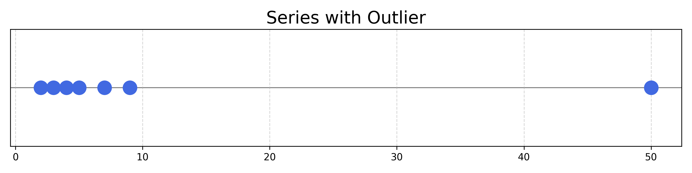
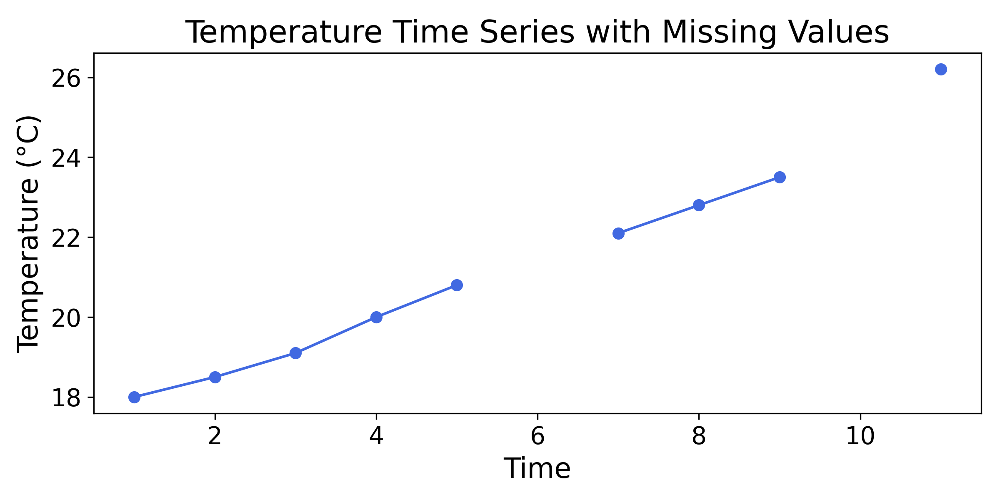
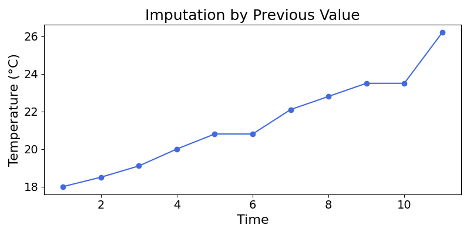
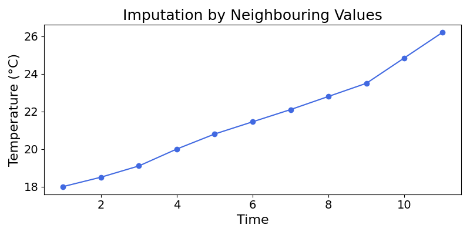

19 Dealing with Missing Numeric Data
Data can sometimes be missing. These missing points are often represented as null or blank values.
| Flat | Surface Area (sq m) | Distance to Centre (km) | Neighb. | Energy Rating | Sell Price (K€) |
|---|---|---|---|---|---|
| A | 85 | 4.2 | Neukölln | B | 420 |
| B | 2.5 | Kreuzberg | A | 610 | |
| C | 95 | 6.1 | Charlott. | C | 390 |
| D | 70 | Kreuzberg | D | 370 | |
| E | 110 | 1.2 | Charlott. | B | 700 |
| F | 60 | 5.0 | Neukölln | F | 310 |
This is problematic for most Machine Learning models, as they cannot handle missing values.
Note: many modern implementations of Machine Learning models, like LightGBM, do natively handle missing values using some of the methods shown in this chapter. This is due to smart implementation; the underlying models still cannot read missing values.
As shown in previous chapters, these Machine Learning models learn the relationship between inputs and outputs:
\[ \text{Input} \longrightarrow \text{Model} \longrightarrow \text{Prediction} \]
They use mathematical tricks (e.g., distance, data splitting) to learn the relationship between the features of each observation (e.g., property surface area) and the target variable (e.g., sell price).
The following chapter will explore different strategies to deal with missing values in a Machine Learning project.
19.1 Are All Missing Values Equal?
19.1.1 Starting with Why
Why is this data point missing? There could be many reasons which may inform our approach to missing data.
With data problems, it is a good idea to start with the source. Is there an issue in the data collection process? Could there be a problem with the database? How many observations is this affecting?
Before developing a strategy, it is critical to understand if there is an issue with the data source. Data source problems could affect many other applications, such as reporting or operations.
Missing values can have different meanings:
- Missing at Random: the observation is missing for an unknown reason, without any apparent pattern
- None: a missing transaction count could mean that no (or 0) transactions were made
- Not Applicable: Missing product sub-category could mean that the current product does not have a sub-category
- Missing Measurement: a missing temperature reading in some sensor data may mean that the measurement was skipped
Before coming up with a strategy, it is critical to understand why these values are missing.
19.1.2 Excluding Rows with Missing Values
Is the missing data point critical? In the context of property pricing, the surface area is a critical data point. You may want to exclude the rows that have a key feature value missing.
| Flat | Surface Area (sq m) | Distance to Centre (km) | Neighb. | Energy Rating | Sell Price (K€) |
|---|---|---|---|---|---|
| A | 85 | 4.2 | Neukölln | B | 420 |
| B | 2.5 | Kreuzberg | A | 610 | |
| C | 95 | 6.1 | Charlott. | C | 390 |
Looking at the example above, you would remove property B from the training data.
19.1.3 Excluding Features with Missing Values
| Property | Surface Area (sq m) | Distance to Centre (km) | Neighb. | Energy Rating | Sell Price (K€) | Years since Build |
|---|---|---|---|---|---|---|
| A | 85 | 4.2 | Neukölln | B | 420 | |
| B | 120 | 2.5 | Kreuzberg | A | 610 | 8 |
| C | 95 | 6.1 | Charlott. | C | 390 | |
| D | 70 | 3.8 | Kreuzberg | D | 370 | 22 |
| E | 110 | 1.2 | Charlott. | B | 700 | 12 |
| F | 60 | 5.0 | Neukölln | F | 310 |
In the above example, the column Years since Build has many missing values. It would make sense to either review the underlying data or remove it from the dataset.
Filtering out both rows and columns containing missing values may reduce the amount of data available to the model. For this reason, more sophisticated approaches are sometimes needed.
19.1.4 Imputation of Missing Numerical Values
For numerical features, missing values can be handled with a method called imputation. This fills missing values with another substitute value.
19.1.4.1 Imputation by 0
When the missing value means “None”, like the missing number of transactions, it is a good idea to replace missing values with 0.
Imagine the data above also included “Balcony Area” in square meters. A missing value could mean “no balcony” and could safely be replaced by 0. Before doing so, ensure that a missing “Balcony Area” really means “no balcony”. In general, these data processing methods rely on a solid understanding of the data and problem.
| Property | Total Area (sq m) | Balcony Area (sq m) | Sell Price (K€) |
|---|---|---|---|
| A | 95 | 12 | 450 |
| B | 55 | 280 | |
| C | 110 | 15 | 510 |
19.1.4.2 Imputation by the Mean
When values are missing at random, the mean or median could be good candidates for imputation.
In a dataset containing student heights:
| Student | Height (cm) | Gender | Grade |
|---|---|---|---|
| A | 170 | M | 10 |
| B | F | 10 | |
| C | 165 | F | 9 |
| D | 180 | M | 11 |
| E | 172 | M | |
| F | 160 | F | 9 |
A good strategy to deal with missing heights is to impute student height using the average height of all students. With a large enough dataset, a more fine-grained approach could be used. You could, for example, impute the missing heights based on students within the same grade.
To impute the Height of student B, we calculate the average height over all students:
\[ \text{Mean} = \frac{170 + 165 + 180 + 172 + 160}{5} = 169.4 \]
The Height of student B would be replaced by \(169.4\).
19.1.4.3 Imputation by the Median
The median could also be a good choice of substitute value for imputation. The median of a series is the middle number in a sorted list. Taking the list: \([2,3,4,5,7,9,50]\) as example, the median is \(5\). In other words, it is the value such that at least 50% of the values are less than or equal to it. One advantage of the median is that it is not sensitive to outliers.
An outlier is a data point that is very different to the others
Considering the following series:
\([2,3,4,5,7,9,50]\)

The point at \(50\) is an outlier of this distribution, as it is very far from the others. The mean of the series is affected by this number:
Exercise 19.1 Calculate the mean and median of this series. Show that the mean is \(11.43\), and that the median is \(5\).
Exercise 19.2 Show that after removing the item \(50\), the mean is \(5.0\), and the median is \(4.5\).
As you may have observed, the mean varies widely, whereas the median remains stable.
Exercise 19.3 Find the median of the following series:
- \({5, 7, 9, 12, 15}\)
- \({1, 2, 2, 4, 8, 10, 13}\)
What happens when the length of the series is an even number?
Looking at the following series: \([1,2,3,4]\), what would be the middle value? As the series contains an even number of items, there is no middle value.
By convention, the median of these series is the average between the two middle values. Here, the median would be \(\frac{2+3}{2} = 2.5\).
Exercise 19.4 Find the median of the following series:
- \({2, 3, 5, 8}\)
- \({4, 6, 8, 10, 12, 14}\)
Going back to the student data:
| Student | Height (cm) | Gender | Grade |
|---|---|---|---|
| A | 170 | M | 10 |
| B | F | 10 | |
| C | 165 | F | 9 |
| D | 180 | M | 11 |
| E | 172 | M | |
| F | 160 | F | 9 |
To impute the Height of student B with the median, we find the median. The median of the heights is \(170\), as it is the middle number in the sorted Height series: \({160, 165, 170, 172, 180}\).
19.1.4.4 Imputation of Time-Series Data
Time-series data is data with a time dimension. As an example, the following data could be the temperature of a machine in a factory:
| Time (s) | Temperature (°C) |
|---|---|
| 1 | 18.0 |
| 2 | 18.5 |
| 3 | 19.1 |
| 4 | 20.0 |
| 5 | 20.8 |
| 6 | |
| 7 | 22.1 |
| 8 | 22.8 |
| 9 | 23.5 |
| 10 | |
| 11 | 26.2 |
Time-series data is also often represented as a line chart:

Time can be defined as the continuous and apparently irreversible progress of existence. Just like “truth” or “space”, the definitions of the foundational aspects of experience can sometimes be disappointing.
19.1.4.4.1 Using the Mean and Median
Imputing null values with the mean and median could lead to some unintuitive results.
Exercise 19.5 Impute the null values of the following series using mean, then the median. To do so, show that the mean of the series is \(21.22\) and the median is \(20.8\).
| Time (s) | Temperature (°C) |
|---|---|
| 1 | 18.0 |
| 2 | 18.5 |
| 3 | 19.1 |
| 4 | 20.0 |
| 5 | 20.8 |
| 6 | |
| 7 | 22.1 |
| 8 | 22.8 |
| 9 | 23.5 |
| 10 | |
| 11 | 26.2 |

19.1.4.4.2 Alternative Methods
What would be a better method? In these time-series tasks, imputation by the previous value could be a good idea. This method is called forward-fill. It assumes that the value remains constant until a new measurement is taken.

The series looks more natural than with mean-imputation. Still, we can do better.
Another approach is to impute the missing values by computing the average of the two neighboring values. This method, often called linear interpolation, is particularly useful for data with a clear trend, as it smoothly connects the known data points.

That looks more like it!
19.1.4.5 Wrapping Up
There are many ways to impute numerical values, and no optimal solution. The choice comes down to the specific problem at hand. Remember that before coming up with an imputation strategy, it is critical to understand why the values are missing.
19.2 Information Leakage
As mentioned in the introduction to this chapter, data preprocessing is a step in which information leakage commonly occurs. Dealing with missing values is no exception.
In the process of filling numerical null values with the median or the average (or anything calculated from the data), it is important to calculate these numbers from the training set only.
Then, null values in the test set would be imputed with the metrics calculated with the training data.
Why is this the case? Because this is exactly what would happen as the model is used to predict new observations. When the model will predict the price of a new property, and that property has a missing value, how will it be imputed?
At this point, the only information available will be the training data. The missing values will be imputed using the mean or median of the training data.
The purpose of generating predictions on the test set is to estimate model performance on unseen data. Null values in the test set should be treated in the same way as missing values in unseen data.
In Machine Learning practice, these preprocessing methods are said to be fitted on the training set and applied to the test set. This fitting is the calculation of descriptive statistics.
19.3 Final Thoughts
This chapter walked through handling missing numerical values with the following steps:
- Understand why the values are missing
- Develop a strategy: filtering or different types of imputation
- Fit the imputation method to the training data
- Impute null values in the test set using training data statistics
It is important to remember to avoid information leakage in null value handling. This can be done by a clear separation of the training and test set, before data preprocessing.
Looking at the previous example, what if the “Neighbourhood” column was missing? The following section will explore how to handle missing categorical values.
19.4 Solutions
Solution 19.1. Exercise 19.1
Series: \([2,3,4,5,7,9,50]\)
\[ \text{Mean} = \frac{2 + 3 + 4 + 5 + 7 + 9 + 50}{7} = \frac{80}{7} \approx 11.43 \]
The median is the middle number of the sorted series. Here, \(5\).
Solution 19.2. Exercise 19.2
Series: \([2,3,4,5,7,9]\)
\[ \text{Mean} = \frac{2 + 3 + 4 + 5 + 7 + 9}{6} = \frac{30}{6} = 5 \]
As the series now contains an even number of observations, the median is the average of the two middle numbers, here \(\frac{4+5}{2} = 4.5\).
Solution 19.3. Exercise 19.3
- \({5, 7, 9, 12, 15}, \text{Median} = 9\)
- \({1, 2, 2, 4, 8, 10, 13}, \text{Median} = 4\)
Solution 19.4. Exercise 19.4
- \({2, 3, 5, 8}, \text{Median} = \frac{3 + 5}{2} = 4\)
- \({4, 6, 8, 10, 12, 14}, \text{Median} = \frac{8 + 10}{2} = 9\)
Solution 19.5. Exercise 19.5
For imputation, we need to compute both the mean and median:
\[ \begin{aligned} \text{Mean} &= \frac{18 + 18.5 + 19.1 + 20 + 20.8 + 22.1 + 22.8 + 23.5 + 26.2}{9} \\ &= \frac{191}{9} = 21.22 \end{aligned} \]
The median is the middle number of the sorted series:
\({18, 18.5, 19.1, 20.0, 20.8, 22.1, 22.8, 23.5, 26.2}\)
Here: \(20.8\)
| Time | Temperature (°C) | Temperature (Mean Imputation) | Temperature (Median Imputation) |
|---|---|---|---|
| 1 | 18.0 | 18.0 | 18.0 |
| 2 | 18.5 | 18.5 | 18.5 |
| 3 | 19.1 | 19.1 | 19.1 |
| 4 | 20.0 | 20.0 | 20.0 |
| 5 | 20.8 | 20.8 | 20.8 |
| 6 | 21.22 | 20.8 | |
| 7 | 22.1 | 22.1 | 22.1 |
| 8 | 22.8 | 22.8 | 22.8 |
| 9 | 23.5 | 23.5 | 23.5 |
| 10 | 21.22 | 20.8 | |
| 11 | 26.2 | 26.2 | 26.2 |